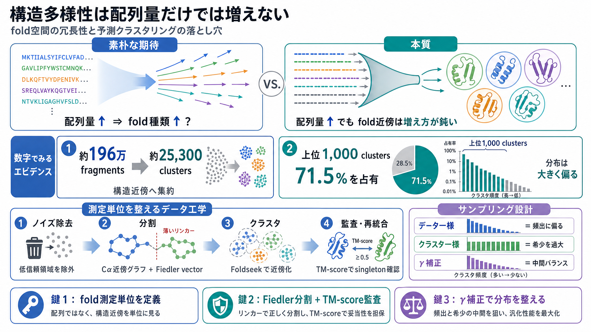

Hide and seek: structure similarities with FoldSeek - 310 AI
A new algorithm called FoldSeek (van Kempen et al. 2024) efficiently clustered over 214 million protein structures from …

A new algorithm called FoldSeek (van Kempen et al. 2024) efficiently clustered over 214 million protein structures from …
Foldseek enables fast and sensitive comparisons of large structure sets. It reaches sensitivities similar to state-of-th…
Highlights. ▻ Structure alignment methods are used to assign proteins to fold groups. ▻ The accuracy of this procedure i…
# Massive Structural Clustering of the AlphaFold Database using Foldseek Cluster Reveals New Insights into Protein Struc…
Spectral clustering algorithms typically start from local information encoded in a weighted graph on the data and cluste…